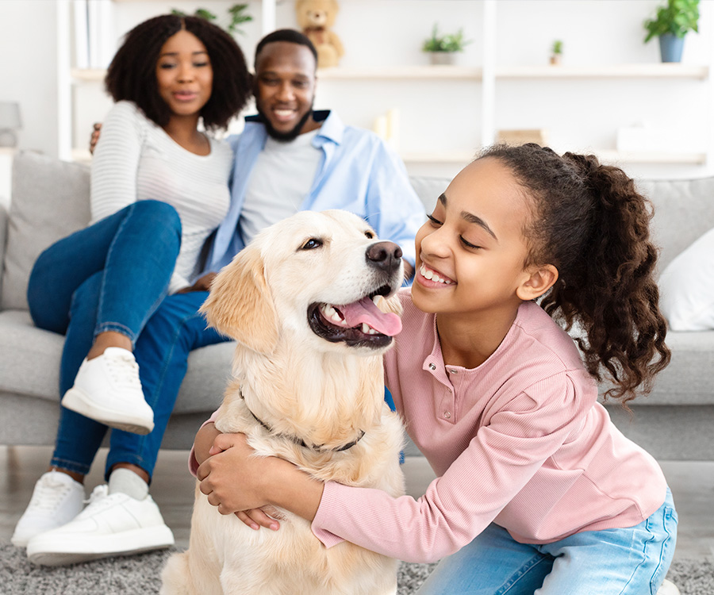
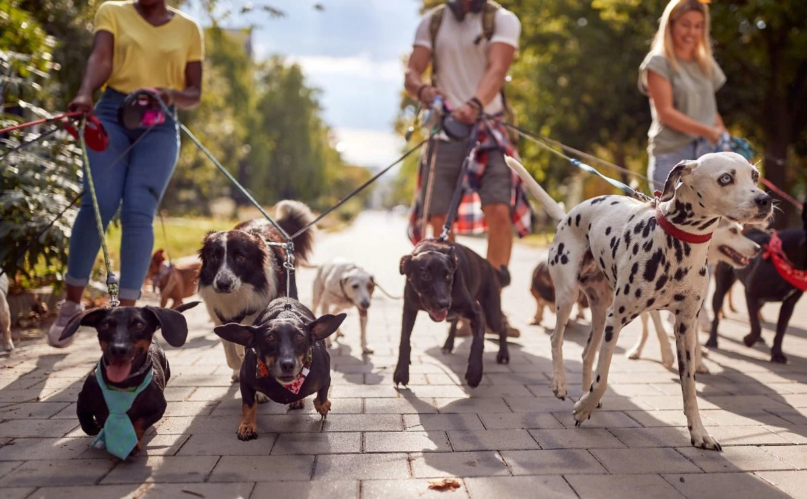
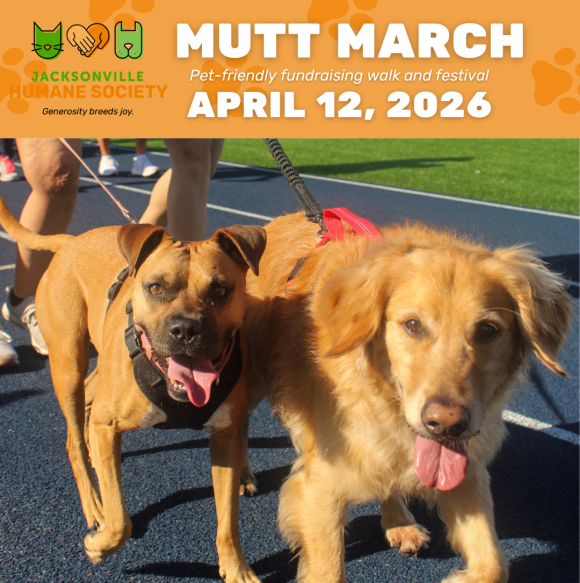

About Us
Adopt a Puppy Jacksonville is a place where we help many puppies find new and welcoming homes. This shelter works with so many places around Jacksonville to give every pup their dream home. There are many different types of things Adopt a Puppy Jacksonville does for its supporters and pups!
Adopting Your Own Pup!

At Adopt a Puppy Jacksonville, our mission is to make sure every puppy is able to find a perfect home. To do this, we make sure to have many different locations for all different types of puppies to be able to find a home. We have many different breeds, personalities, and sizes of puppies to make sure that everyone is able to find a pup that fits their lifestyle and needs. We also have many differentways to assist you in finding the right pup for you and your family. If you are interested in adopting you very own puppy, feel free to check out our adoption page to learn more about the process and selection of puppies we have to offer!
Click to view Adoption Page!Rehoming a Pup!

Sometimes families are no longer able to help or assist their puppies due to unfortunate reasonings. Because of this, we help puppies find new homes for them if their current situation is no longer suitable to them. What we do is we take in any puppy that needs a new home and we make sure to take care of them to the best of our ability while we search for a new home for them. We make sure to take in any pupp that needs a new home and we don't turn away any pup or ask any questions about the pup's past or any personal questions if it is not relevant to the pup's care. If you are in need to find a new home for your pup, please check out our rehoming page to learn about our process.
Click to view Rehoming Page!Visiting Our Locations!

To help keep our puppies confortable and happy while within our care, we have many premium facilities all across Jacksonville. We make sure to provide the best care possible for each pup and to check on them frequently. Anyone is welcome to visit any of our locations visited on the locations page to learn more and even adopt one of our adorable puppies!
Click to view Locations Page!Staff Applications & Volunteering

We have many opportunities for those interested in joining the Adopt a Puppy Jacksonville team or simply work as a volunteer at a shelter or adoption event. We have many ways for you to get involved, such as walking a pup or just giving the animals some attention. Becoming a volunteer is a great way to help improve finding these pups a new home and to get involved in a better cause.
Click to view Volunteer Page!Joining Community Events!

Adopt a Puppy Jacksonville participates in various community events to raise awareness about pet adoption. We believe that working within the community helps assist in finding future homes for our puppies while spreading awareness about our mission in helping dogs find their permanent home. Everyone is welcome to join these events and we encource you to check out some of our events and possibly even pring your friends or pups to join in on the fun!
Click to view Community Events Page!Success Stories
Click on a Button to view a success Story
It will talk about the pup, its breed, and a short story about it.